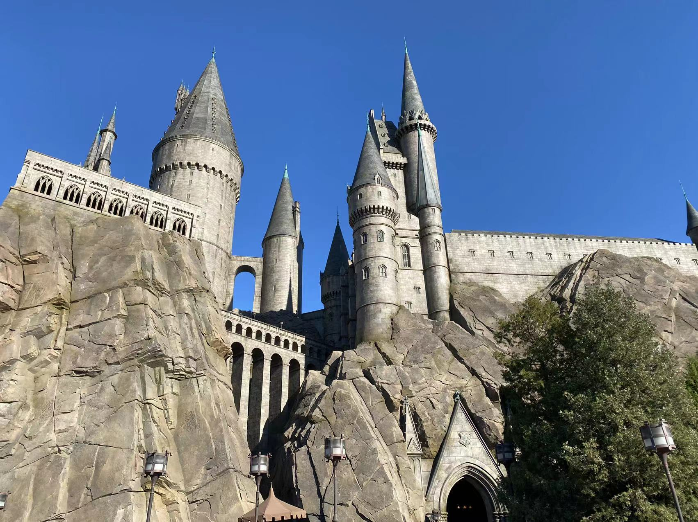

Jiaheng Liu 刘佳恒Ph.D. StudentDepartment of Computer Science Beihang University Email: liujiaheng AT buaa DOT com
|
 |
Biography
I am a third-year (2019-now) Ph.D. student in Department of Computer Science, Beihang University, advised by Prof. Ke Xu. My research interest is computer vision and deep learning.
I obtained my bachelor degree from Software Engineering Department, Beihang University. I interned at SenseTime.
Publications
Honors
- First-class Academic Scholarship, 2019, 2020, 2021
- ICCV2019 Workshop--The 2nd Place of the Lightweight Face Recognition Challenge, 2019
- First Prize in the BUAA Feng Ru Cup (Academic and Technology), 2018
Academic Service
- Conference Reviewer CVPR 2020, AAAI 2021, CVPR 2021, ICCV 2021, CVPR 2022, AAAI 2022
- Journal Reviewer IJCV, CSUR
| © Jiaheng Liu |